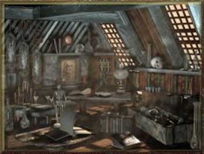

Le seguenti regole rappresentano il metodo utilizzabile dagli utenti di magia per la creazione degli oggetti magici. Si noti che i sacerdoti utilizzano regole differenziate mentre esistono specifici e differenti procedimenti che gli stessi utenti di magia utilizzano per la creazione di particolari tipologie di oggetti magici (oggetti magici minori, liquidi magici, bacchette magiche). Queste regole, dunque, devono essere utilizzate dagli utenti di magia per la creazione di oggetti magici non appartenenti alle suddette categorie.
Gli incantamenti magici, comunemente definiti maggiori per differenziarli dai minor enchantment, possono suddividersi in quattro differenti gradi di potenza crescente:
|
POTENZA DELL'INCANTAMENTO |
PUNTI ESPERIENZA |
VALORE MONETARIO |
| Lesser Enchantment | 500-999 punti esperienza | 5000-9999 monete d'oro |
| Superior Enchantment | 1000-1499 punti esperienza | 10.000-14.999 monete d'oro |
| Greater Enchantment | 1500-2999 punti esperienza | 15.000-29.999 monete d'oro |
| Extraordinary Enchantment | 3000 + punti esperienza | 30.000 + monete d'oro |
| Artefatti | variabile | variabile |
Gli Artefatti sono oggetti magici unici e molto rari che facendo eccezione non possono essere creati utilizzando le seguenti regole.
Tranne che per specifiche eccezioni, a tutti gli incantamenti maggiori si applicano le seguenti regole:
1) Gli incantamenti maggiori sono veri e propri incantamenti che creano oggetti magici permanenti. Qualora una magia di detect magic viene lanciata su un oggetto incantato con un incantamento maggiore lo stesso risulterà magico e la magia determinerà anche la potenza dell'incantamento come prevista nella precedente tabella.
2)
Si noti che
le armi incantate con gli incantamenti magici maggiori sebbene siano magiche
non sono in grado di
colpire le creature immuni alle armi normali
essendo il loro incantamento
insufficiente per tale scopo. Qualora, inoltre, un'arma di fattura speciale sia
incantata con un incantamento maggiore, questo
non impedisce all'arma di perdere
l'affilatura nei casi in
cui ciò si verifica (come ad es. quando deve effettuare un tiro salvezza).
Solo gli
incantamenti maggiori
generali della scuola
Enchantment
permettono infatti di colpire creature immuni alle armi normali e magiche e di
superare le regole sull'affilatura delle armi.
3)
A meno che non sia espressamente prevista una specifica deroga,
un singolo oggetto può essere incantato con un solo incantamento magico maggiore.
Fatta eccezione per
gli
incantamenti maggiori
generali della scuola
Enchantment.
Uno di tali incantamenti maggiori potrà, infatti, essere cumulato con un diverso
incantamento maggiore sul medesimo oggetto magico (per gli incantamenti magici
minori verificare le specifiche regole al seguente
link).
REGOLE GENERALI PER LA PRODUZIONE DEGLI INCANTAMENTI MAGGIORI
1) Gli incantamenti maggiori possono essere creati dagli utenti di magia a partire dall'8° livello di esperienza. A meno che non diversamente specificato gli utenti di magia di livello inferiore all'8° non dispongono di conoscenze magiche adeguate per provare a creare un incantamento maggiore. A seconda della potenza dell'incantamento, inoltre, esiste un livello utile minimo per la creazione dei vari incantamenti maggiori. Gli utenti di magia che risultino di livello inferiore rispetto a quello utile (ma che abbiano raggiunto comunque l'8° livello di esperienza) riceveranno una penalità in fase di creazione. Il livello utile minimo per ogni categoria di potenza di incantamento maggiore è indicato nella seguente tabella:
|
POTENZA DELL'INCANTAMENTO |
LIVELLO UTILE MINIMO |
| Lesser Enchantment | 9° livello di esperienza |
| Superior Enchantment | 11° livello di esperienza |
| Greater Enchantment | 13° livello di esperienza |
| Extraordinary Enchantment | 15° livello di esperienza |
1) LA LIBRERIA MAGICA GENERICA :
I maghi che desiderino creare incantamenti magici maggiori devono disporre di una libreria magica generica contenente un ammontare minimo di volumi per la creazione degli incantamenti maggiori, ognuno dei quali ha un valore medio di mercato di 400 corone se in due volumi da 100 pagine scritti in pergamena da 4 libbre l'uno (manutenzione al costo di 3 corone mensili) oppure di 450 corone se in un volume da 200 pagine scritto in carta da 4 libbre (manutenzione al costo di 3,5 corone mensili), che varia al variare della potenza dell'incantamento minore come previsto nella seguente tabella.
|
POTENZA DELL'INCANTAMENTO |
NUMERO DI VOLUMI |
| Lesser Enchantment | 10 volumi |
| Superior Enchantment | 15 volumi |
| Greater Enchantment | 20 volumi |
| Extraordinary Enchantment | 30 volumi |
I volumi per la creazione degli incantamenti maggiori sono testi generici riguardanti i processi ed i metodi magici necessari alla creazione di incantamenti maggiori. Questi testi possono essere scritti esclusivamente dagli utenti di magia. Prima di poterli scrivere il mago deve dedicarsi allo studio ed alla sperimentazione nel laboratorio per la produzione di incantamenti maggiori sui metodi e le tecniche per la produzione di tali incantamenti. Questa sperimentazione ha un costo pari a 3 corone al giorno. Dopo 30 giorni di sperimentazione (non è richiesto che siano consecutivi) il mago sarà in grado di scrivere un volume per la creazione degli incantamenti maggiori. Un mago potrà scrivere, in ogni caso, un ammontare massimo di volumi per la creazione degli incantamenti maggiori pari a 2 + il livello di esperienza raggiunto.
2) LA LIBRERIA MAGICA SPECIFICA PER SCUOLE DI MAGIA:
La libreria magica specifica per scuole di magia contiene testi specifici riguardanti i processi ed i metodi magici necessari alla creazione di incantamenti maggiori appartenenti ad una specifica e determinata scuola di magia. Sebbene questi testi non siano necessari per procedere alla creazione degli incantamenti maggiori, rappresentano un valido aiuto per l'utente di magia che si cimenta in tale procedimento. Ogni volume che compone questa libreria ha un valore medio di mercato di 650 corone se in due volumi da 100 pagine scritti in pergamena da 4 libbre l'uno (manutenzione al costo di 5 corone mensili) oppure di 750 corone se in un volume da 200 pagine scritto in carta da 4 libbre (manutenzione al costo di 5,5 corone mensili). A seconda del numero di volumi posseduti in ogni singola scuola di magia potrà differenziarsi tra:
|
TIPOLOGIA DI LIBRERIA SPECIFICA PER SCUOLA DI MAGIA |
NUMERO DI VOLUMI |
| Libreria Specifica Minore | 3 volumi |
| Libreria Specifica | 7 volumi |
| Libreria Specifica Maggiore | 12 volumi |
I
volumi per la creazione degli
incantamenti maggiori specifici di una scuola di magia
possono essere scritti esclusivamente dagli utenti di magia. Prima
di poterli scrivere il mago deve dedicarsi allo studio ed alla sperimentazione
nel laboratorio per la produzione di incantamenti maggiori sui metodi e le
tecniche per la produzione di tali incantamenti. Questa sperimentazione ha un
costo pari a 5 corone al giorno. Dopo 30 giorni di sperimentazione (non è
richiesto che siano consecutivi) il mago sarà in grado di scrivere un volume
per la
creazione degli incantamenti maggiori.
Un mago potrà scrivere, in ogni caso, un ammontare massimo di volumi
per la creazione degli
incantamenti maggiori specifici di una determinata scuola pari al numero di
livelli di potere nel quali ha raggiunto il 3° grado di conoscenza nella
medesima scuola di magia + 1 per ogni livello in cui ha raggiunto il 4° grado di
conoscenza nella medesima scuola.
A
titolo esemplificativo Raidnor, mago di 8° livello di esperienza, possedendo il
4° grado di conoscenza nella scuola Conjuration/Summoning del primo livello di
potere ed il 3° grado di conoscenza nella stessa scuola dal secondo al quarto
livello di potere potrà scrivere un massimo di 5 volumi per la creazione di
incantamenti maggiori specifici della scuola Conjuration (dopo aver effettuato
la relativa sperimentazione).
3) LA LIBRERIA MAGICA SPECIFICA PER TIPOLOGIA DI OGGETTO MAGICO:
La libreria magica specifica per tipologia di oggetto magico contiene testi specifici riguardanti i processi ed i metodi magici necessari alla creazione di incantamenti maggiori da applicare su una determinata tipologia di oggetti magici. Sebbene questi testi non siano necessari per procedere alla creazione degli incantamenti maggiori, rappresentano un valido aiuto per l'utente di magia che si cimenta in tale procedimento. Ogni volume che compone questa libreria ha un valore medio di mercato di 500 corone se in due volumi da 100 pagine scritti in pergamena da 4 libbre l'uno (manutenzione al costo di 3,5 corone mensili) oppure di 600 corone se in un volume da 200 pagine scritto in carta da 4 libbre (manutenzione al costo di 4,5 corone mensili). Affinché una libreria sia completa (e quindi utilizzabile) occorre che nella stessa sia presente l'ammontare di volumi minimi previsto per la singola tipologia come indicato nella seguente tabella:
|
TIPOLOGIA DI OGGETTO MAGICO |
NUMERO MINIMO DI VOLUMI |
| Anelli Magici | 3 volumi |
| Verghe Incantate | 2 volumi |
| Verghe della Stregoneria | 2 volumi |
| Staffe | 2 volumi |
| Armature e Scudi | 5 volumi |
| Armi Magiche | 5 volumi |
| Amuleti Magici | 2 volumi |
| Libri e Tomi | 2 volumi |
| Gemme ed Altri Gioielli | 2 volumi |
| Stivali e Guanti | 2 volumi |
| Vestiti e Mantelli | 2 volumi |
| Borse e Contenitori | 2 volumi |
| Strumenti Musicali | 2 volumi |
| Attrezzi e Utensili | 2 volumi |
| Altri Oggetti | 3 volumi |
I volumi per la creazione di specifiche tipologie di oggetti magici possono essere scritti esclusivamente dagli utenti di magia. Prima di poterli scrivere il mago deve essere riuscito nella creazione di un oggetto magico di quella tipologia. In particolare, per ogni oggetti magico che il mago è riuscito a creare costui potrà scrivere un volume della tipologia relativa fino ad un massimo di 5 volumi per singola tipologia.
4) IL LABORATORIO MAGICO :

I
maghi che desiderino creare
incantamenti magici maggiore deve disporre, inoltre, di un laboratorio magico
dove operare.
Per la creazione di oggetti magici possono essere utilizzati i medesimi
laboratori necessari alla creazione dei nuovi incantesimi. Questo genere di
laboratorio è ideato per ricercare nuovi incantesimi e contiene centinaia di
rari ingredienti, secchi e in polvere, misurini e tantissimi campioni per
provare gli effetti. Per un laboratorio del genere occorre uno spazio minimo e
un costo annuo determinato per manutenzione, se questo costo non è pagato il
laboratorio va in rovina ed è inservibile. In particolare, potranno essere
utilizzati i seguenti laboratori:
|
Tipo di laboratorio |
Costo del laboratorio |
Spazio occupato |
Costo annuale di manutenzione |
|
Laboratorio di fortuna |
1.000 g.p. |
50 metri quadri |
150 g.p. |
|
Piccolo laboratorio |
3.000 g.p. |
80 metri quadri |
450 g.p. |
|
Laboratorio fornito |
6.500 g.p. |
120 metri quadri |
975 g.p. |
|
Grande laboratorio |
10.000 g.p. |
200 metri quadri |
1.500 g.p. |
5) TEMPO DI PRODUZIONE :
Il tempo
base di produzione di un incantamento dipende dai punti esperienza dello stesso
e dal grado di potenza
dell'incantamento e può essere calcolato con la seguente formula:
1 giorno di lavoro ogni 5 punti
esperienza di valore dell'incantamento.
Incantamenti di grado di potenza superiore a
Lesser Enchantment
richiederanno un
tempo aggiuntivo come indicato nella seguente tabella:
|
POTENZA DELL'INCANTAMENTO |
TEMPO DI LAVORO AGGIUNTIVO |
| Superior Enchantment | +30 giorni addizionali |
| Greater Enchantment | +65 giorni addizionali |
| Extraordinary Enchantment | +130 giorni addizionali |
Il tempo
base di produzione sarà poi modificato dai seguenti modificatori:
+10%
(per eccesso) per ogni livello di
esperienza in cui il mago risulta inferiore rispetto al livello utile minimo per
la produzione dell'oggetto magico.
- 5%
(per eccesso) per ogni livello di esperienza in cui il mago risulta superiore
rispetto al livello utile minimo per la produzione dell'oggetto magico.
- 10 giorni
(per eccesso) se il mago ha raggiunto il livello utile minimo di esperienza per
la produzione di incantamenti di un grado di potenza superiore.
-
20 giorni
(per eccesso) se il mago ha
raggiunto il livello utile minimo di esperienza per la produzione di
incantamenti di due gradi di potenza superiore.
- 30 giorni
(per eccesso) se il mago ha raggiunto il livello utile minimo di esperienza per
la produzione di incantamenti di tre gradi di potenza superiore.
6) COSTI DI PRODUZIONE : Per la produzione di un incantamento maggiore il mago deve utilizzare un ammontare di reagenti e polveri magiche pari ad un determinato ammontare del valore finale dell'incantamento. Il mago può decidere di utilizzare componenti magici in misura ridotta, normale od abbondante. Questa scelta si ripercuoterà sulle % di successo dello stesso nella produzione dell'oggetto magico, come in seguito specificato.
|
AMMONTARE DI REAGENTI |
% DEL VALORE FINALE |
| Componenti magici in misura ridotta | 20 % |
| Componenti magici in misura comune | 25 % |
| Componenti magici in misura abbondante | 30 % |
7) RISORSA MISTICA OBBLIGATORIA: Per poter produrre un incantamento maggiore il mago deve necessariamente utilizzare nel procedimento una risorsa mistica. Solo il mago che ha estratto la risorsa può utilizzarla validamente a tal fine. Si noti che, per essere utilizzata, la risorsa mistica deve corrispondere alla scuola di magia od all'effetto principale proprio dell'incantamento magico minore che il mago vuole creare. A seconda del grado di potenza dell'incantamento maggiore che il mago vuole creare dovrà necessariamente essere utilizzata una risorsa mistica di una potenza minima specificata come indicato nella seguente tabella:
|
POTENZA DELL'INCANTAMENTO |
LIVELLO UTILE MINIMO |
| Lesser Enchantment | Common Mystical Resource |
| Superior Enchantment | Uncommon Mystical Resource |
| Greater Enchantment | Rare Mystical Resource |
| Extraordinary Enchantment | Exotic Mystical Resource |
Oltre ad utilizza la risorsa mistica richiesta (che non inciderà sulle possibilità di creazione) il mago può impiegare una qualsiasi risorsa mistica aggiuntiva per migliorare le proprie possibilità di creazione come specificato nella tabella delle percentuali di successo.
8) PERCENTUALE DI
SUCCESSO :
Al termine dei giorni di lavoro il mago potrà tirare un dado percentuale per
verificare se la creazione dell'oggetto ha avuto successo. Il mago potrà
ottenere i seguenti risultati:
Successo critico
(da 01 a 05
%)
:
Il procedimento di incantamento
sarà riuscito, ed il
mago avrà anche risparmiato il 33% dell'ammontare di reagenti magici che aveva
deciso di utilizzare.
Successo
:
Il procedimento di incantamento
sarà riuscito.
Fallimento : Il procedimento di incantamento
sarà fallito, il mago potrà però riprovare ad incantare l'oggetto magico utilizzando
un ammontare supplementare di reagenti pari al
3% del valore finale
dell'oggetto magico ed un ammontare di
giorni pari ad 1/5 dell'ammontare
originario (arrotondato per eccesso). Al termine di tale periodo il mago potrà
ripetere il tiro percentuale per l'incantamento. Ad ogni tiro successivo al tiro
il mago otterrà un bonus
cumulativo di +1% alla
possibilità di successo ma al contempo
aumenterà cumulativamente dell'1%
la possibilità di falllimento critico.
Fallimento critico (da 96
a 100) : Il procedimento
di incantamento sarà fallito irreversibilmente, il mago avrà perso tempo e
risorse (comprensive di risorse mistiche) e quel determinato incantamento
maggiore non potrà più essere creato su quel determinato oggetto.
Per determinare la percentuale di successo si valutino i seguenti modificatori:
|
POTENZA DELL'INCANTAMENTO |
% BASE DI SUCCESSO |
| Lesser Enchantment | 35 % |
| Superior Enchantment | 30 % |
| Greater Enchantment | 25 % |
| Extraordinary Enchantment | 20 % |
|
LIVELLO DI ESPERIENZA DEL MAGO |
MODIFICATORE % |
| Per ogni livello di esperienza inferiore rispetto al livello utile minimo | - 5 % |
| Per ogni livello di esperienza superiore rispetto al livello utile minimo | + 1 % |
| Se il mago ha raggiunto il livello utile minimo di esperienza per la produzione di incantamenti di un grado di potenza superiore | + 5 % |
| Se il mago ha raggiunto il livello utile minimo di esperienza per la produzione di incantamenti di due grado di potenza superiore | + 10 % (non si cumula con il precedente) |
| Se il mago ha raggiunto il livello utile minimo di esperienza per la produzione di incantamenti di tre grado di potenza superiore | + 15 % (non si cumula con i due precedenti) |
|
SPECIALIZZAZIONE PREGRESSA |
MODIFICATORE % |
| Ogni volta che il mago è riuscito in precedenza nella creazione del medesimo incantamento maggiore | + 1 % (max +5%) |
| Per ogni due procedimenti di incantamenti maggiori dello stessa potenza o di potenza superiore che il mago abbia in precedenza effettuato* | + 1 % (max +5%) |
|
CONOSCENZE MAGICHE |
MODIFICATORE % |
| Per il III grado di conoscenza nei vari livelli di potere della scuola Enchantment | + 1 % * relativo livello di potere |
| Per il IV grado di conoscenza nei vari livelli di potere della scuola Enchantment | + 1 % supplementare per ogni livello di potere |
| Per il III grado di conoscenza nei vari livelli di potere della scuola dell'incantamento | + 1 % * relativo livello di potere |
| Per il IV grado di conoscenza nei vari livelli di potere della scuola dell'incantamento | + 1 % supplementare per ogni livello di potere |
|
COMPETENZE POSSEDUTE |
MODIFICATORE % |
| Arcanology (successo critico/successo/fallimento/fallimento critico) | (+ 7 %/ + 3 %/ - 2 %/ - 5 %) |
| Thaumaturgy (successo critico/successo/fallimento/fallimento critico) | (+ 5 %/ + 2 %/ - 1 %/ - 3 %) |
| Spellcraft (successo critico/successo/fallimento/fallimento critico) | (+ 3 %/ + 1 %/ - 1 %/ - 2 %) |
|
TEMPO DI PRODUZIONE |
MODIFICATORE % |
| Riduzione del 25% (per eccessso) del tempo base di produzione* | - 6 % |
| Riduzione del 10% (per eccessso) del tempo base di produzione* | - 2 % |
| Tempo di produzione base | nessuno |
| Aumento del 10% (per eccessso) del tempo base di produzione* | + 2 % |
| Aumento del 25% (per eccessso) del tempo base di produzione* | + 6 % |
|
AMMONTARE DI REAGENTI |
MODIFICATORE % |
| Componenti magici in misura ridotta | - 5 % |
| Componenti magici in misura comune | nessuno |
| Componenti magici in misura abbondante | + 5 % |
|
LABORATORIO |
MODIFICATORE % |
| Laboratorio di Fortuna | - 5 % |
| Laboratorio di Piccolo | - 2 % |
| Laboratorio Fornito | + 2 % |
| Laboratorio Grande | + 5 % |
|
LIBRERIA MAGICA GENERICA |
MODIFICATORE % |
| Ammontare minimo di volumi richiesti | nessuno |
| Ammontare doppio di volumi richiesti | + 4 % |
|
LIBRERIA MAGICA SPECIFICA DI SCUOLA |
MODIFICATORE % |
| Libreria Specifica Minore | + 2 % |
| Libreria Specifica | + 4 % |
| Libreria Specifica Maggiore | + 7 % |
|
LIBRERIA MAGICA SPECIFICA PER TIPOLOGIA |
MODIFICATORE % |
| Ammontare minimo di volumi richiesti | + 2 % |
| Ammontare doppio di volumi richiesti | + 4 % |
|
UTILIZZO DI RISORSE MISTICHE* |
MODIFICATORE % |
| Common Mystical Resource | + 5 % Lesser + 3 % Superior + 2 % Greater + 1 % Extraordinary |
| Uncommon Mystical Resource | + 8 % Lesser + 5 % Superior + 3 % Greater + 2 % Extraordinary |
| Rare Mystical Resource | + 16 % Lesser + 12 % Superior + 10 % Greater + 7 % Extraordinary |
| Exotic Mystical Resource | + 30 % Lesser + 25 % Superior + 20 % Greater + 15 % Extraordinary |
* Questo bonus cumulativo si aggiunge a quello generico dovuto all'esperienza del mago. Per determinare l'ammontare di questo bonus occorre determinare quanti incantamenti di potenza superiore il mago sarebbe potenzialmente in grado di creare per il livello di esperienza raggiunto. Per ogni incantamento di potenza superiore al quale il mago ha potenzialmente accesso costui riceve un bonus cumulativo del +5%. Qualora, ad esempio, un mago di 8° livello si cimentasse a creare un Lesser Minor Enchantment (minimo 4° livello di esperienza) costui otterrebbe per il suo livello di esperienza un bonus base di +8 oltre ad un bonus di +15 per essere in grado di produrre incantamenti di tre potenze superiori. Se, invece, lo stesso mago si cimentasse a creare un Minor Enchantment (minimo 5° livello di esperienza) costui otterrebbe per il suo livello di esperienza un bonus base di +8 oltre ad un bonus di +10 per essere in grado di produrre incantamenti di tre potenze superiori.
* Questo bonus si applica qualora il mago abbia provato a creare, in precedenza, incantamenti maggiori della potenza pari a quello che si appresta a creare od a questo superiori. Il beneficio si ottiene indipendentemente dal risultato dei tentativi purché gli stessi siano stati portati a compimento (non saranno considerati i tentativi supplementari ed agevolati per incantare il medesimo oggetto in caso di fallimento comune del tentativo principale). Qualora, ad esempio, il mago abbia provato a creare, in precedenza, due Superior Enchantment costui riceverà un bonus di +1% alla creazione di un qualsiasi Lesser Enchantment o Superior Enchantment. Quando un mago raggiunge il massimo bonus dovuto alla specializzazione pregressa (+5%) potrà considerarsi uno specialista nella creazione di quella tipologia di incantamenti maggiori (e di quelli di categoria inferiore). Per tale motivo costui riceverà un ammontare di punti esperienza bonus che varia a seconda del tipo di incantamento massimo in cui si è specializzato (si noti che questi punti esperienza saranno applicati unicamente al personaggio ed in nessuna misura ai punti partenza) come previsto nella seguente tabella. Deve osservarsi che qualora il mago abbia ricevuto, in precedenza, punti esperienza bonus per essersi specializzato nella produzione di incantamenti maggiori di potenza inferiore dall'ammontare che deve ricevere devono essere sottratti tutti i punti esperienza ottenuti in precedenza.
|
POTENZA DELL'INCANTAMENTO |
PUNTI ESPERIENZA |
| Lesser Enchantment | 3.000 |
| Superior Enchantment | 7.500 |
| Greater Enchantment | 17.500 |
| Extraordinary Enchantment | 40.000 |
* Un'unica risorsa mistica supplementare può essere utilizzata nel procedimento di creazione di un incantamento maggiore. Solo il mago che ha estratto la risorsa può utilizzarla validamente a tal fine. Si noti che, per essere utilizzata, la risorsa mistica deve corrispondere alla scuola di magia od all'effetto principale proprio dell'incantamento magico minore che il mago vuole creare. Il bonus alla percentuale di produzione dipende sia dalla rarità della risorsa supplementare utilizzata che dalla potenza dell'incantamento che si desidera creare.
9) PUNTI
ESPERIENZA BONUS
Qualora il mago riesca nella creazione di un incantamento maggiore costui riceverà, la prima volta che riesce nella costruzione di un tipo specifico di oggetto
magico, punti esperienza
pari al 100% di quelli dell'incantamento, mentre le volte successive, punti esperienza
pari al 50% di quelli dell'incantamento che ha creato. Ogni volta che, invece, costui
porti a compimento il tentativo senza riuscire ad incantare l'oggetto riceverà
un ammontare di punti esperienza pari al 25% di quelli
dell'incantamento maggiore che ha provato a creare. Si noti che questi punti
esperienza saranno applicati unicamente al personaggio ed in nessuna misura ai
punti partenza.
Un mago che, avendo raggiunto il livello utile minimo di esperienza per la creazione di incantamenti di un determinato grado di potenza, sia riuscito nella creazione di tre oggetti magici appartenenti a tre diverse tipologie di oggetti magici ottiene un bonus costante ogni volta che riceve punti esperienza che varia a seconda della potenza degli incantamenti creati come indicato nella seguente tabella. Si noti che questo bonus è applicato unicamente ai punti esperienza del personaggio e non ai punti partenza del giocatore. Inoltre, questo bonus si applica solo ai punti esperienza acquisiti dal personaggio nel corso delle sedute di gioco e non incide nei punti esperienza calcolati in fase di creazione del personaggio. Si noti che tali bonus non sono cumulabili essendo applicato solo il bonus maggiore raggiunto dal personaggio (tale bonus, invece, potrà essere cumulato a quello previsto per altri tipi di oggetti magici).
|
POTENZA DELL'INCANTAMENTO |
BONUS COSTANTE AGLI XP |
| Lesser Enchantment | 3 % |
| Superior Enchantment | 5 % |
| Greater Enchantment | 7 % |
| Extraordinary Enchantment | 10 % |
10)
CREAZIONE CONGIUNTA
Più maghi possono partecipare validamente alla creazione di un incantamento
maggiore
(il procedimento non può essere frazionato fra più di due maghi). Il vantaggio
principale della creazione congiunta è la suddivisione del tempo di lavoro fra i
due maghi. Alla ricerca congiunta saranno applicate le seguenti regole:
-
Tutti i maghi dovranno aver raggiunto
almeno l'8° livello di esperienza.
-
I maghi divideranno tra loro i
giorni di lavoro base necessari alla produzione
(arrotondandoli per eccesso).
-
I maghi potranno lavorare anche in tempi ed in laboratori differenti (ogni mago
potrà, quindi, decidere se impiegare o meno giorni supplementari). In ogni caso,
quando ogni mago lavora deve avere a disposizione l'oggetto da incantare. In ogni caso
il tentativo di produzione di considererà terminato quando entrambi i maghi
avranno completato i giorni di lavoro.
-
Ogni mago dovrà impiegare la sua
risorsa mistica obbligatoria.
-
Quando l'ultimo mago avrà terminato i giorni di lavoro sarà effettuato il tiro
di per verificare se l'oggetto è stato incantato. Dovrà effettuarsi un unico
tiro e la percentuale di successo sarà
pari alla media, per difetto,
delle percentuali
spettanti ai vari maghi con l'applicazione di un'ulteriore
penalità del - 5% per ogni
mago ulteriore al primo che ha partecipato al procedimento di creazione.
-
I maghi si divideranno quindi i
punti esperienza ottenuti per il procedimento di produzione e tireranno un dado
percentuale (ogni mago effettuerà il suo tiro). Costoro, infatti, avranno una
percentuale pari alla frazione corrispondente su un intero al numero totale dei
partecipanti (es. 50% se erano due maghi, 33% se erano tre maghi e così via...) di possibilità che il tentativo di produzione si considererà a
tutti gli effetti effettuato (ad es. ai fini della valutazione dell'esperienza
del mago nella produzione degli incantamenti minori nonché ai fini
dell'ottenimento del bonus costante ai punti esperienza). Se il tiro fallisce
la partecipazione non sarà considerata sufficiente ed il
tentativo di produzione si considererà come non effettuato.
11)
ASSISTENTI
Un mago può utilizzare validamente da uno a tre assistenti
(ulteriori assistenti potranno partecipare senza dare benefici) che lo
coadiuvino nel procedimento di produzione. Potranno essere considerati validi
assistenti solo i personaggi che abbiano almeno un livello di esperienza in una
qualsiasi classe di utenti di magia. Alla fine del procedimento, per ogni
assistente che ha partecipato assieme al mago all'intero processo di produzione
dell'oggetto (od alla sua metà in caso di creazione congiunta), il mago riceverà
un bonus percentuale pari ad 1% ogni due livelli di esperienza dell'assistente
fino ad un massimo del +3% (1% al 1° e 2° livello, 2% al 3° e 4° livello, 3% al
5° livello in poi).